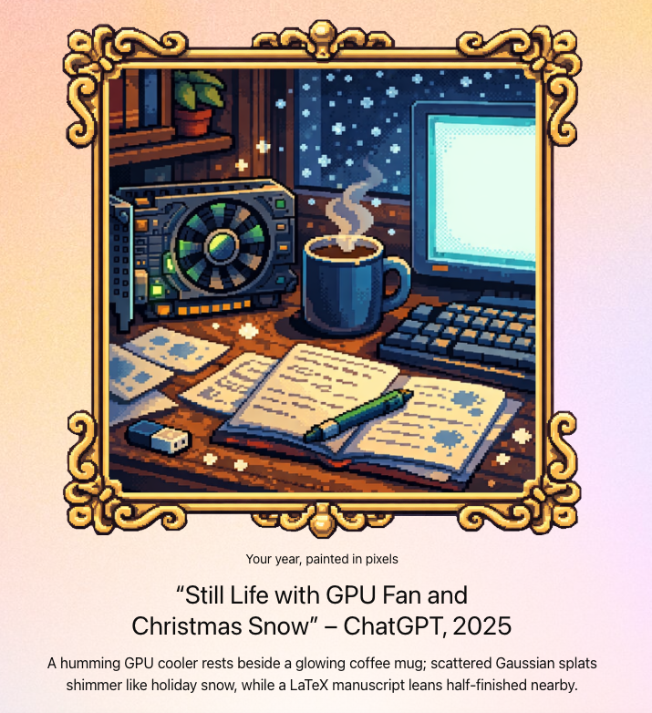

Kaiwen(Kevin) Jiang
Email: kevinjiangedu at gmail dot com
Google Scholar |
GitHub
Hi! I'm a PhD student at UC San Diego, advised by Prof. Ravi Ramamoorthi. Previously, I received my bachelor's degree from Beijing Jiaotong University, and gratefully worked with Prof. Lin Gao, Prof. Hongbo Fu, Prof. Yu-Kun Lai, and Shu-Yu Chen. Besides, I spent a wonderful summer with Prof. Toby Jia-Jun Li from University of Notre Dame through the iSURE program. I also spent a fruitful summer at NVIDIA, working with Shalini De Mello, Koki Nagano, Xueting Li and Seonwook (Wookie) Park.
Publications

Deming Li, Kaiwen Jiang, Yutao Tang, Ravi Ramamoorthi, Rama Chellappa, Cheng Peng
Neural Information Processing Systems (NeurIPS), 2025.
[paper]
[project]
[video]
[code]

Kaiwen Jiang, Feng-Lin Liu, Shu-Yu Chen, Pengfei Wan, Yuan Zhang, Yu-Kun Lai, Hongbo Fu, Lin Gao
IEEE Transactions on Visualization and Computer Graphics (TVCG), 2025.
[paper]
[project]
[video] [code]


Zheng Ning, Brianna L. Wimer, Kaiwen Jiang, Keyi Chen, Jerrick Ban, Yapeng Tian, Yuhang Zhao, Toby Jia-Jun Li
ACM Conference on Human Factors in Computing Systems (CHI), 2024.
[paper]
Zheng Ning, Zheng Zhang, Jerrick Ban, Kaiwen Jiang, Ruohong Gan, Yapeng Tian, Toby Jia-Jun Li
ACM Conference on Creativity and Cognition (C&C), 2024.
[paper]


Kaiwen Jiang, Shu-Yu Chen, Feng-Lin Liu, Hongbo Fu, Lin Gao
ACM SIGGRAPH Asia, 2022, also in IEEE TPAMI 2025.
[paper] [paper (TPAMI)] [project] [video] [code]

Academic Service
Reviewer of ACM SIGGRAPH, ACM TOG, IEEE CVPR, IEEE TVCG.
About Me
I am a student in the Department of Computer Science and Engineering at the University of California San Diego, where I work with Prof. Ravi Ramamoorthi. My current research interests lie at the intersection of computer graphics and virtual reality. I obtained the SenseTime Scholarship in 2022.
My first name in Chinese is pronounced very similar to Kevin in English, which is, therefore, my English name. In spare time, I am a huge fan of Cyber Literature (over ten years of experience), and I occasionally play Screeps for fun (you can find my AI here!).
This is how ChatGPT summarizes for my 2025:
Template adapted from Mukund Varma T
Last Updated: Dec 22nd, 2025